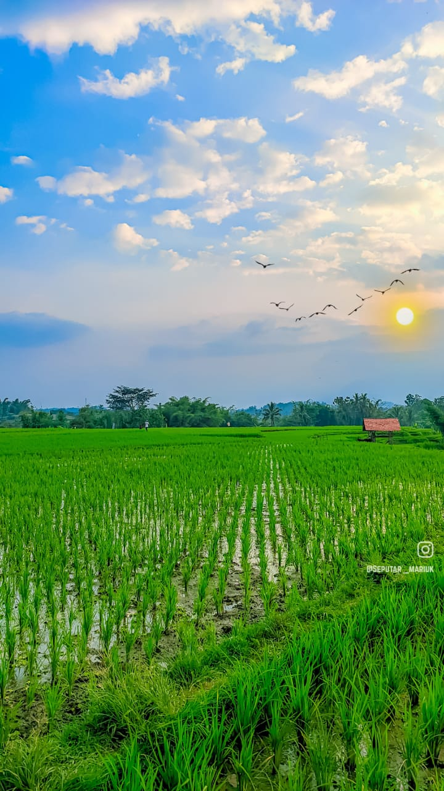
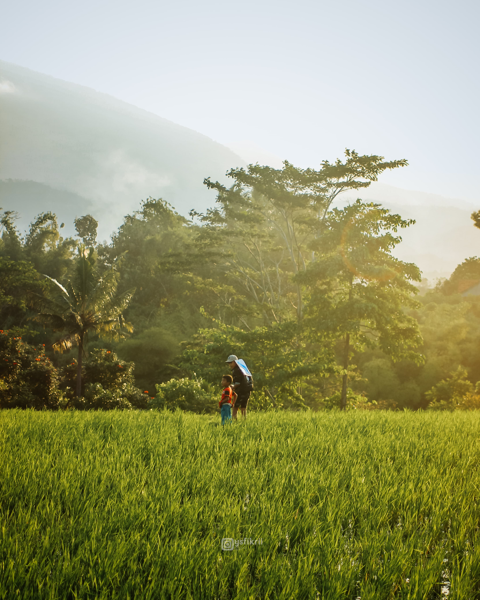
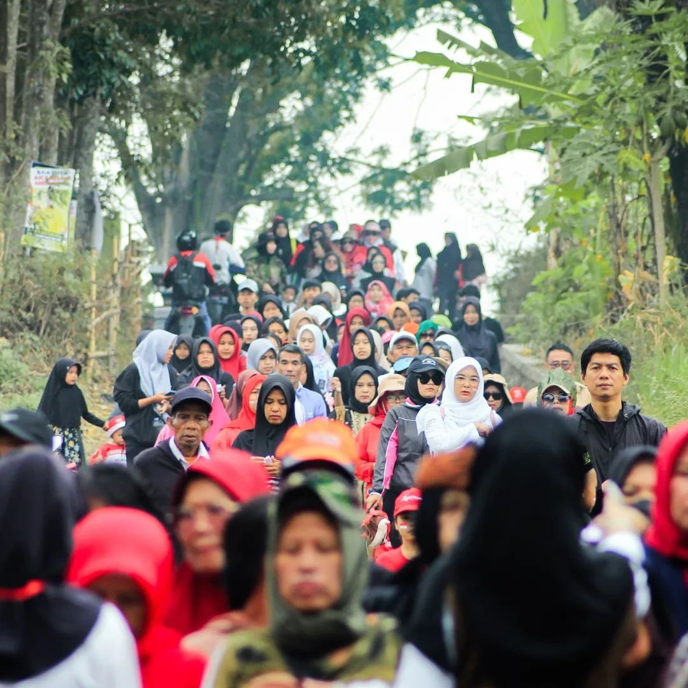
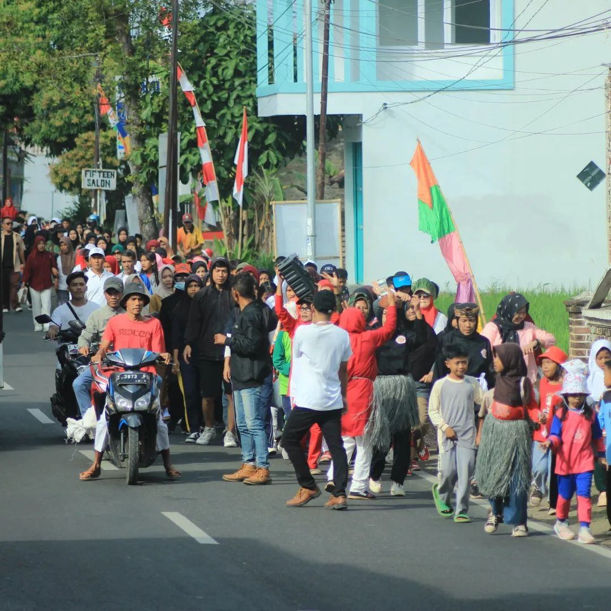
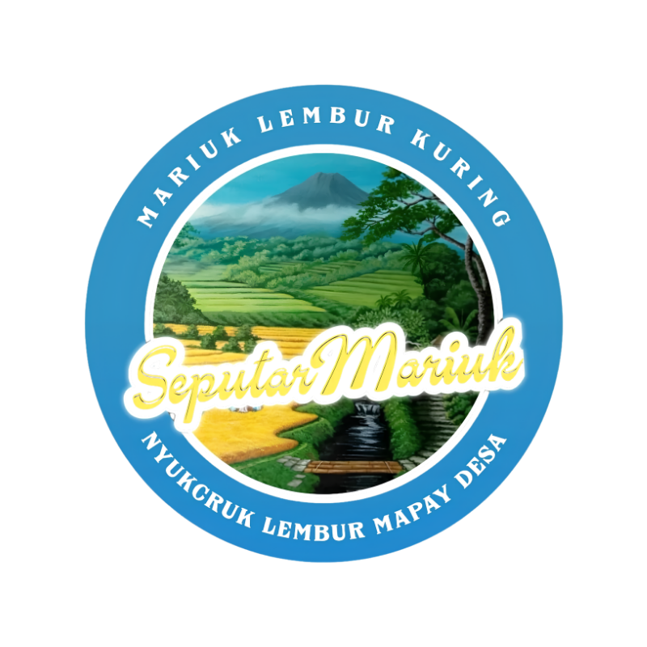
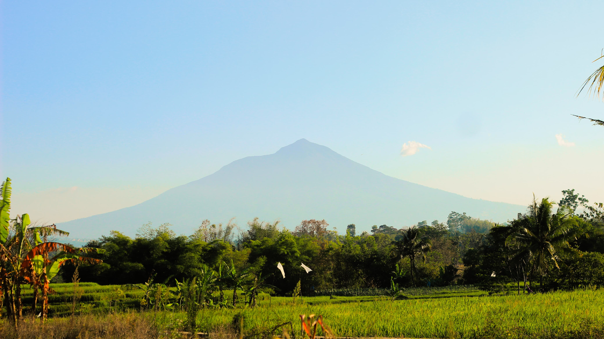
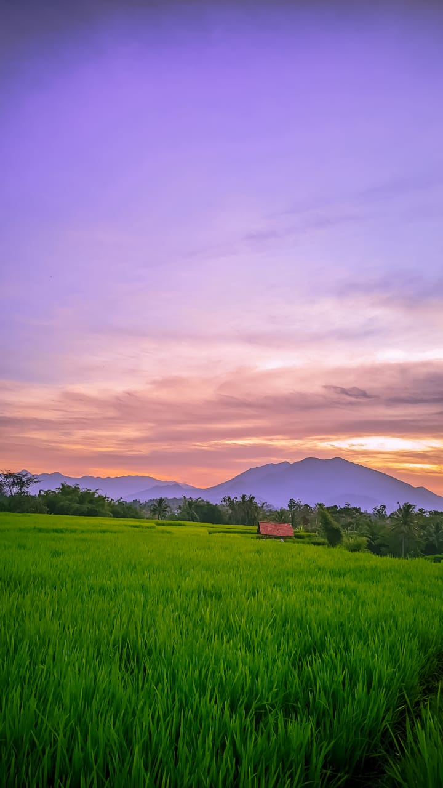

Galeri Foto
Potret Kehidupan Kampung Mariuk
Momen-momen indah yang terabadikan dari alam dan keseharian masyarakat Kampung Mariuk









Nikmati pesona alam pegunungan, hamparan sawah hijau, dan kehangatan budaya masyarakat yang masih terjaga

Kampung Mariuk adalah sebuah kampung yang terletak di kaki gunung dengan pemandangan alam yang memesona. Dikelilingi oleh hamparan sawah hijau dan pegunungan yang megah, kampung ini menawarkan kedamaian dan keindahan yang sulit ditemukan di tempat lain. Masyarakatnya ramah, budayanya kental, dan tradisinya masih lestari hingga saat ini.
Pemandangan gunung dan sawah yang memukau
Tradisi dan adat istiadat yang masih lestari
Keramahan penduduk yang hangat menyambut
Hasil bumi yang melimpah dan subur
Momen-momen indah yang terabadikan dari alam dan keseharian masyarakat Kampung Mariuk





Di Kampung Mariuk, setiap pagi disambut embun pegunungan, setiap senja dihiasi langit keemasan, dan setiap senyum warganya menghangatkan hati.
Ingin mengetahui lebih banyak tentang Kampung Mariuk atau berencana berkunjung? Jangan ragu untuk menghubungi kami.
Kampung Mariuk, Maripari, Sukawening, Garut, Jawa Barat, Indonesia
@seputar_mariuk